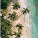

How do you feel about the theories regarding US influence in the Caribbean?
Posted by u/Shonen_Fan · 8 days ago
4 upvotes · 57 comments
A common joke/theory is that Puerto Rico, Cuba, Trinidad and Tobago, and Guyana will become US states in the near future. How do you feel about such claims?
u/BrentDavidTTTop 1% Commenter8d ago
31 upvotes
I really think most of you all are young and think relationships of political, economic and military conveniences between the US and the region are new!
u/Weekly-Cicada-86158d ago
5 upvotes
T&T just sick of the Venezuelan government bs lol
u/aguilasoligeTop 1% Commenter8d ago
23 upvotes
All throughout history, superpowers always influence their neighbors, that's inevitable. The only thing smaller countries can do is try to benefit from it
u/NeoPrimitiveOasis8d ago
19 upvotes
More like colonies, not states.
u/sunlit_elais7d ago
15 upvotes
Idiotic. The US is heavily anti-immigrant right now, and they are going to give a few million people at once the option to immigrate there with full vote rights? When Puerto Rico is right there and they still haven't allowed them the condition of state?
Try colony or puppet state.
u/happy_bluebird8d ago
13 upvotes
I don't think you know what "joke" or "theory" mean
u/Awkward-Hulk7d agoEdited 7d ago
12 upvotes
History really fucked Cuba. Spain was stupidly repressive there, fueling the eventual wars of independence. Cuba could have easily been an autonomous community of Spain today - much like the Canary Islands*. But alas, that never happened.
And then we got stuck with a dictator in the 1950s only to replace that dictator with another in 1959. That latest dictator then earned himself an embargo from the world's superpower. And the country has essentially regressed back to the 1800s now...
*It's likely that the US would have invaded anyway, but a Spain with the support of the Cuban people wouldn't have been as easy of a target.
u/frazbox8d ago
27 upvotes
Jokes on you; Puerto Rico is already America
u/QuirkyRefuse56458d ago
5 upvotes
Not a state though, which is what OP said.
u/elRobRex8d ago
3 upvotes
The Supreme Court of the United States disagrees with you.
u/QuirkyRefuse56457d ago
1 upvotes
The Supreme Court of the United States said Puerto Rico is a state? I hope you're just trolling because that is obviously nowhere close to being true.
u/CarelessPangolin9937d ago
4 upvotes
It's certainly not a theory (assuming your usage of the term is in the non scientific sense). It's just a matter of fact. From the Monroe doctrine to the revival under trump (not that it ever went away) it's been this way for centuries. The recent expulsion of Cuban doctors across many Caribbean countries is due to U.S pressure and threats. They have halted countries upgrading their infrastructure because it involves Chinese equipment. They had Cuba under embargo and has assets in Haiti. So to suggest the U.S has influence would be underselling the state of affairs
u/Tall_Pressure70428d ago
3 upvotes
It is like LATAM. America needs happy clients, not rebels.
u/TumbleweedSuper99307d ago
3 upvotes
Looking at Education, infrastructure and crime under British rule and today, many people questioning home rule for TnT
u/Weekly-Cicada-86158d agoEdited 8d ago
5 upvotes
I see Guyana as more like a eu territory than to ever to become a US backed state since it the European who buy most of the oil.
u/TeachingSpiritual8887d ago
4 upvotes
Not eu territory.
Guyana is like a neutral place, we sell to whoever. It just so happens that America and EU buy most of our oil.

u/Islandrocketman8d ago
5 upvotes
Who wants to give up their sovereignty? None of nations.
u/Genki-sama27d ago
2 upvotes
I have seen an article giving the pros and cons of hands being a US satellite state, actually giving credence to it. I'd say they're correct. Trinidad already halfway there
u/StrategyFlashy45267d ago
3 upvotes
No credence to that notion. The trump administration has put great emphasis on removing brown and black people from the US. They will never give free entry to non- Europeans.
u/Cool_Bananaquit97d ago
2 upvotes
I hope we don't become a state
u/Own-Enthusiasm-23487d ago
2 upvotes
As a Puerto Rican, all I want for the island is free economic trade with other countries so we can thrive. Instead...we have to depend on the USA for everything...I don't hate the USA, but historically you simply cannot deny the damage the USA has done to Puerto Rico.
u/Icy_Scar_12497d ago
2 upvotes
I could see Cuba maybe happenning, but not the rest ever. PR is already a territory, and look how hard it's been to get them to Statehood, will never happen with TNT and Guyana unless they want to be colonies
u/catejeda8d ago
2 upvotes
False.
u/Em1-_-Top 1% Commenter6d ago
2 upvotes
Puerto Rico and Cuba belong to the Antillean Confederation, don't care about the other two, but PR gotta become independent first so Hostos can be returned to his motherland (As were his wishes) and the Antillean Confederation can begin.
u/catsoncrack4207d ago
1 upvotes
Ridiculous. US has less to gain and more to lose. Now territories with autocracy, that I can see. Like Puerto Rico but we won't be granted citizenship. Just better access to work visas
I really think most of you all are young and think relationships of political, economic and military conveniences between the US and the region are new!
T&T just sick of the Venezuelan government bs lol
All throughout history, superpowers always influence their neighbors, that's inevitable. The only thing smaller countries can do is try to benefit from it
More like colonies, not states.
Idiotic. The US is heavily anti-immigrant right now, and they are going to give a few million people at once the option to immigrate there with full vote rights? When Puerto Rico is right there and they still haven't allowed them the condition of state?
Try colony or puppet state.
I don't think you know what "joke" or "theory" mean
History really fucked Cuba. Spain was stupidly repressive there, fueling the eventual wars of independence. Cuba could have easily been an autonomous community of Spain today - much like the Canary Islands*. But alas, that never happened.
And then we got stuck with a dictator in the 1950s only to replace that dictator with another in 1959. That latest dictator then earned himself an embargo from the world's superpower. And the country has essentially regressed back to the 1800s now...
*It's likely that the US would have invaded anyway, but a Spain with the support of the Cuban people wouldn't have been as easy of a target.
Jokes on you; Puerto Rico is already America
Not a state though, which is what OP said.
The Supreme Court of the United States disagrees with you.
The Supreme Court of the United States said Puerto Rico is a state? I hope you're just trolling because that is obviously nowhere close to being true.
It's certainly not a theory (assuming your usage of the term is in the non scientific sense). It's just a matter of fact. From the Monroe doctrine to the revival under trump (not that it ever went away) it's been this way for centuries. The recent expulsion of Cuban doctors across many Caribbean countries is due to U.S pressure and threats. They have halted countries upgrading their infrastructure because it involves Chinese equipment. They had Cuba under embargo and has assets in Haiti. So to suggest the U.S has influence would be underselling the state of affairs
It is like LATAM. America needs happy clients, not rebels.
Looking at Education, infrastructure and crime under British rule and today, many people questioning home rule for TnT
I see Guyana as more like a eu territory than to ever to become a US backed state since it the European who buy most of the oil.
Not eu territory.
Guyana is like a neutral place, we sell to whoever. It just so happens that America and EU buy most of our oil.

u/Islandrocketman 8d agoWho wants to give up their sovereignty? None of nations.
I have seen an article giving the pros and cons of hands being a US satellite state, actually giving credence to it. I'd say they're correct. Trinidad already halfway there
No credence to that notion. The trump administration has put great emphasis on removing brown and black people from the US. They will never give free entry to non- Europeans.
I hope we don't become a state
As a Puerto Rican, all I want for the island is free economic trade with other countries so we can thrive. Instead...we have to depend on the USA for everything...I don't hate the USA, but historically you simply cannot deny the damage the USA has done to Puerto Rico.
I could see Cuba maybe happenning, but not the rest ever. PR is already a territory, and look how hard it's been to get them to Statehood, will never happen with TNT and Guyana unless they want to be colonies
False.
Puerto Rico and Cuba belong to the Antillean Confederation, don't care about the other two, but PR gotta become independent first so Hostos can be returned to his motherland (As were his wishes) and the Antillean Confederation can begin.
Ridiculous. US has less to gain and more to lose. Now territories with autocracy, that I can see. Like Puerto Rico but we won't be granted citizenship. Just better access to work visas